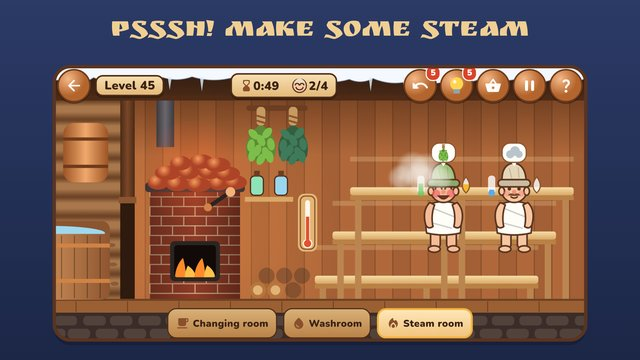

Bathhouse Master
Make some steam, whisk your guests with a birch broom and build your own village bathhouse!
You are the attendant of a village banya. Splash a ladle on the red-hot stones — «PSSSH!» — and steer the cloud of steam onto a guest. Seat guests on the shelves they like: hotter at the top, milder below. All steamed up? Into the icy plunge pool, then to the samovar for tea. Everyone should leave saying «Enjoy your steam!».

- A living bathhouse: steam rises and cools, the stove dies down without logs, the top shelf is hotter than the bottom one.
- 300 shifts from a little banya by the river to the Tsar's bathhouse, every 10th a busy «Saturday steam».
- Funny guests: a grandpa connoisseur, an office clerk, a group of friends, a skier, a grandma with her granddaughter, a foreigner, a boyar.
- Brooms and aromas: birch, oak, juniper, fir; mint, eucalyptus, fir, lavender.
- Bathhouse cosiness: crackling logs, hissing steam, the slap of a broom and quiet folk music.
- Shift of the day, tasks and holidays to come back for tomorrow.
- Play offline, in English and Russian, rated 0+.